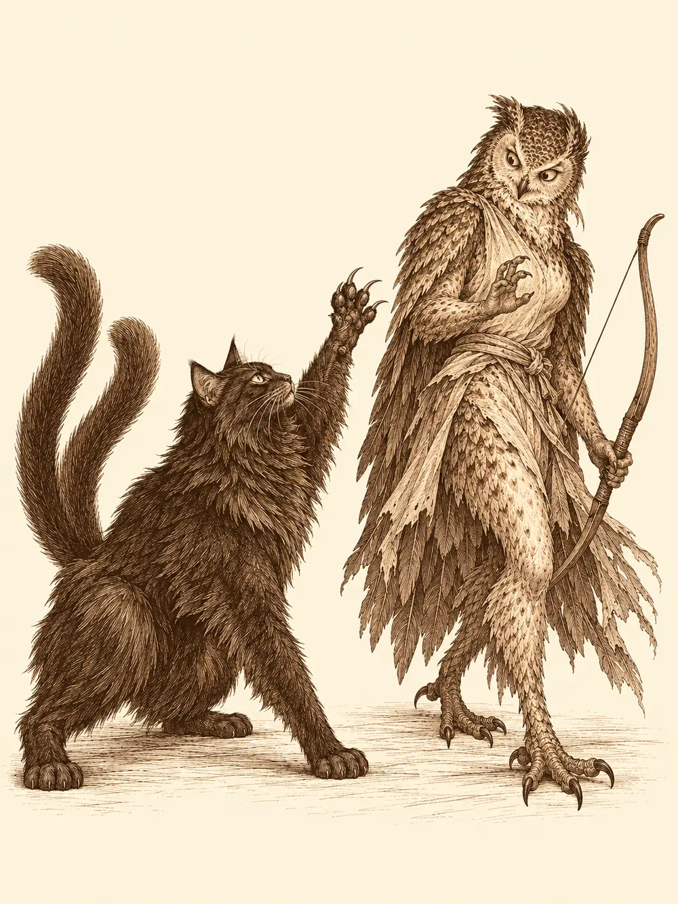

Capítulo 89
El que escribe
Libro VI · La Puerta Negra
La base olía a madera mordida. Tip y Top seguían encerrados dentro, sin armas, a la espera de que el shogun decidiera qué hacer con ellos después de que los cazadores le contaran lo del montaje, y como no podían salir a vigilar la puerta se entretenían royendo las patas de las mesas, los marcos y lo que encontraran. Medio mobiliario tenía ya muescas de dientes.
Shiru había estrenado cuerno. Era de acero, con una bisagra en la base para quitárselo y ponérselo cuando quisiera, y lo hacía encajar con un clic satisfecho cada pocos minutos, como un niño con un juguete nuevo. Erk bebía. Bebía desde la muerte de Sirth, porque seguía creyendo que la culpa era suya, y cuando le dijeron que Tip y Top estaban acusados de asesinato bebió más. Jin había desaparecido durante semanas; ahora volvía con la mandíbula apretada y una venganza a medio planear contra quienes él creía responsables. Ikari, al que la guerra había ido desgastando, se había pasado aquellas noches de taberna en taberna, y alguien lo había llamado para que se dejara ver.
Los dos mujina se mordían el uno al otro en un rincón.
"¿Por qué os pegáis?", les preguntó Shiru, levantándolos a cada uno con una mano como si fueran de papel.
"No nos pegamos. Jugamos a ver quién muerde más fuerte".
Shiru quiso jugar también. Mordió a uno y el mujina chilló. Entonces el ciervo decidió que lo suyo eran los cuernos, tomó carrerilla y embistió. Top salió despedido contra Tip, y los dos atravesaron la pared de papel y madera del cuarto contiguo.
Era la habitación de Sirth. En su cama dormía Lor Miau, el nekomata, que se despertó de golpe y les soltó un zarpazo a cada mujina. Erk se levantó de la silla con una rapidez que nadie le habría supuesto, tensó el arco y disparó al cuerno nuevo de Shiru. La flecha dio en la bisagra y la cornamenta quedó colgando hacia abajo.
"Es el cuarto de Sirth", dijo. "Guarda el respeto".
Shiru intentó colocarse el cuerno, que volvió a caerse con un ruido triste. Ikari arrastró el piano hasta el boquete para taparlo, y el gato salió por debajo, se subió a la mesa y les habló en la lengua de los bosques.
"Desde que no está Sirth, los cazadores no hacen más que holgazanear. Miraos, todos borrachos".
Erk le dijo que no se metiera con ella o se lo llevaría volando por ahí. El gato levantó una pata, sacó las uñas y se le pusieron los ojos morados. La aarakocra se lo pensó mejor.
Ikari se ofreció a arreglar el cuerno. Sacó un poco de la resina que usaba en sus trabajos, se la untó a Shiru en la base y la endureció con un rayo de frío. Aguantó. Solo que las puntas quedaron mirando hacia el suelo.
"Así se lleva en la capital", le aseguró el tanuki. "Te da un aire moderno".
Erk salió en busca de bebida y los demás fueron detrás para que no se cayera de un tejado. En la taberna, Ushi no los dejó ni cruzar la puerta. Les recordó la bola de fuego, el portal en mitad de su pared y todas las veces que le habían destrozado el local. Le vendió a Erk una botella de su licor más fuerte al doble de lo que valía y los echó.
"Una taberna es un sitio para que descansen los aventureros", rezongó Ikari en la calle. "Y en la capital no nos dejan entrar en ninguna".
Entonces se le ocurrió. Si no los querían en una taberna, abrirían la suya.
Había un local vacío más abajo en esa misma calle. Para alquilarlo había que pasar por el castillo. Erk, con una botella en cada mano, quiso entrar a ver a Rua porque era su amiga y empezó a llamarla a gritos por los pasillos; un samurái le pidió por favor que bajara la voz, que el shogun estaba descansando, y cuando volvieron a salir se la encontraron dormida contra la pared, roncando. Dentro, un funcionario los mandó a los archivos, y el encargado de los archivos rebuscó entre papeles hasta encontrar lo que pedían: dos locales contiguos, el número 465 de la calle 43, separados por un tabique.
"Les enviaremos los documentos a su base. Tendrán que firmar, hacer un primer pago y, a final de mes, el shogunato cobrará un tributo sobre las ganancias".
Ikari se ofreció a poner el negocio a su nombre. Un samurái los acompañó a ver los locales con las llaves en la mano. Eran pequeños, de paredes finas. El samurái les explicó que podían derribar el tabique y hacer uno grande, si lo pedían. Ikari tuvo entonces una idea que, según él, venía de tierras lejanas: en un lado, un lugar donde la gente pagara por hacer ejercicio; en el otro, el bar. Quien sudaba, luego tenía hambre y sed.
"No entiendo que la gente pague por correr", dijo Shiru. "Yo corro por el bosque".
Discutieron un rato si por la noche podía haber música. Al final pidieron bar y gimnasio, dejando el tabique en su sitio. El samurái tomó nota, cerró con llave y se las guardó él. Ya les avisarían del precio.
Volvieron a la base hablando de nombres para el local, uno peor que otro, sin ponerse de acuerdo en ninguno.
Erk se durmió en el suelo y empezó a roncar como un fuelle roto. Era imposible oírse ni a dos palmos. Lor Miau salió del cuarto de Sirth con cara de no haber pegado ojo, se subió al pecho de la aarakocra, levantó una pata y le dio un golpecito con la almohadilla.

Erk desapareció.
El gato se dejó caer al suelo y se giró para irse.
"Por fin, tranquilidad".
Ikari le preguntó adónde la había mandado. Shiru intentó agarrarlo por las patas traseras. Jin desenvainó. Uno tras otro, el gato los fue tocando con la pata, y uno tras otro fueron desapareciendo.
Atravesaron algo oscuro y frío y cayeron en una habitación descomunal. Todo era de gigante: un armario como una muralla, una cama como una explanada, una mesa cuyas patas eran troncos. En una estantería se alineaban cientos de libros y, entre ellos, una figurilla de un héroe enmascarado con alas de murciélago. Sobre la mesa había un artefacto que emitía luz y letras que se movían, montones de notas escritas y una taza humeante. Delante, en una silla enorme, alguien les daba la espalda.
Ikari sintió la magia del lugar como un martillazo en la nuca. Intentó volverse invisible, y antes de terminar el conjuro el gigante alargó un brazo, chasqueó los dedos y le deshizo la magia. Luego giró la silla.
Tenía la cara como una calavera.
"Pero ¿qué hacéis aquí? ¿Qué hacéis en Kuroto, que no investigáis nada? Os va a atacar Otakemaru y estáis abriendo un bar".
Erk, todavía con la botella, le preguntó qué había pasado con Sirth. El gigante chasqueó los dedos otra vez y la borrachera se le fue de golpe. Ella le dio un trago a la botella para comprobarlo: era agua.
"¿Queréis ver mi poder? Vamos a jugar un rato".
No sirvió nada de lo que sabían hacer. Jin le escupió fuego y no le alcanzó. Erk le disparó al entrecejo y falló. Shiru le lanzó tres troncos, uno detrás de otro, y ninguno le dio. El gigante cerró el puño en el aire y los cuatro sintieron que los estrujaban como muñecos de trapo. Después chasqueó los dedos sobre Ikari, y el tanuki notó cómo su cuerpo dejaba de obedecerle y su propia mano lanzaba un relámpago contra sus amigos.
"Ya os lo he dicho. Así no me vais a vencer".
Shiru consiguió por fin alcanzarle en un dedo del pie con el rodillo, y el gigante se lo agradeció porque le había quitado una dureza. Ikari lanzó fuego contra las notas de la mesa y quemó una pila entera, y el gigante solo suspiró. Erk volcó la taza sobre el artefacto de luz, que chisporroteó y se apagó. Luego se le subió al hombro y le limpió la oreja con una flecha, y a él le dio tanto gusto que estuvo a punto de cerrar los ojos.
"Pensad más. ¿Quién soy yo?".
Fue entonces cuando empezaron a mirar alrededor de verdad. Uno le arrojó uno de los gruesos tomos de la mesa, uno de los libros donde estaban escritas las leyes de las cosas, y el golpe le arrancó un grito como no le habían arrancado las espadas. Otro rompió el cojín de la cama, que llevaba bordado el emblema del héroe murciélago, y eso también le dolió. Ikari se subió a la estantería y se puso a jugar con la figurilla, y la dejó caer. El gigante la recogió del suelo con una ternura que daba lástima. Uno de ellos se burló entonces de su héroe favorito con una palabra que nadie había oído nunca, y fue como si le clavaran una lanza en el alma.
Shiru juntó todos los tomos en un montón, les puso la mano encima, apartó al gigante a empujones y se sentó en su silla.
"Ahora el narrador soy yo".
El gigante se derrumbó. Por un instante pareció que de verdad se había acabado todo, y el ciervo, desde la silla, empezó a dictar en voz alta lo que pasaría a partir de entonces. Luego la calavera se recompuso pieza a pieza, con un suspiro de cansancio.
"Os lo dije desde el principio. Lo que traéis no sirve aquí. A mí solo me hace daño que toquéis lo que quiero: mis libros, mi silla, mi héroe".
Se puso serio, o lo más serio que podía ponerse una calavera.
"Pero no os he traído para esto. Sois unos blandos. Tenéis cosas que hacer. Hay un mago enfermo en vuestra base, muy enfermo. Hay unas puertas negras al sur. Y hay alguien que pagó a unos asesinos para culparos".
"A mí lo que me motiva ahora es el bar", dijo Ikari.
"Pues os lo cobraré muy caro".
Erk le pidió dinero, o al menos su botella. Jin le exigió que le dijera por qué había muerto Sirth y lo apuntó con una flecha que no era suya. Erk quería oír que ella no había tenido la culpa. Jin culpaba a las tres hermanas y juraba que las mataría. El gigante no le dio a nadie lo que pedía. No devolvió a Sirth ni dijo de quién era la culpa, y cuando Shiru, desde la silla, le propuso un pacto para quedarse con algo de aquel poder, le contestó que no.
"Esos poderes vienen con un precio. Y no".
Chasqueó los dedos una última vez.
"Hala. Id a descansar, que estáis hechos polvo".
Despertaron en la base, entre el piano y la pared rota. Lor Miau dormía en la cama de Sirth como si no hubiera pasado nada. Tip y Top seguían royendo una pata de la mesa. Shiru se tocó la cabeza: el cuerno seguía mirando hacia abajo.